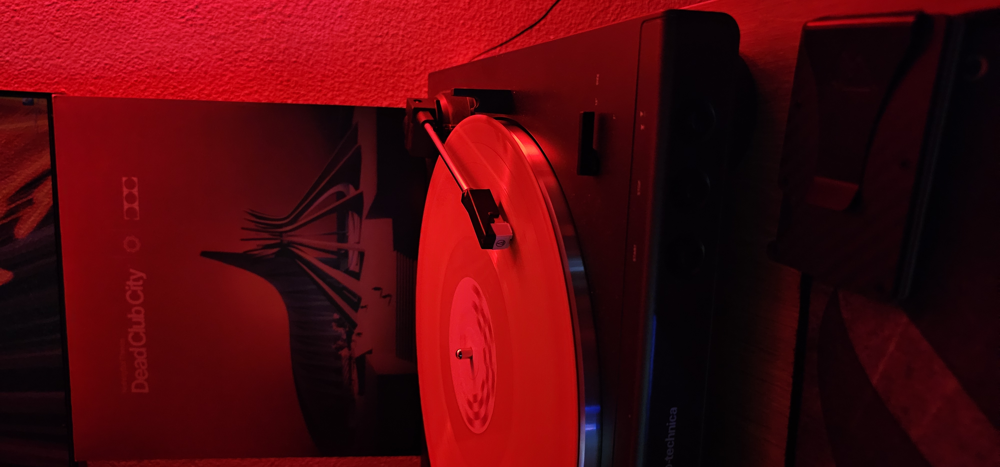
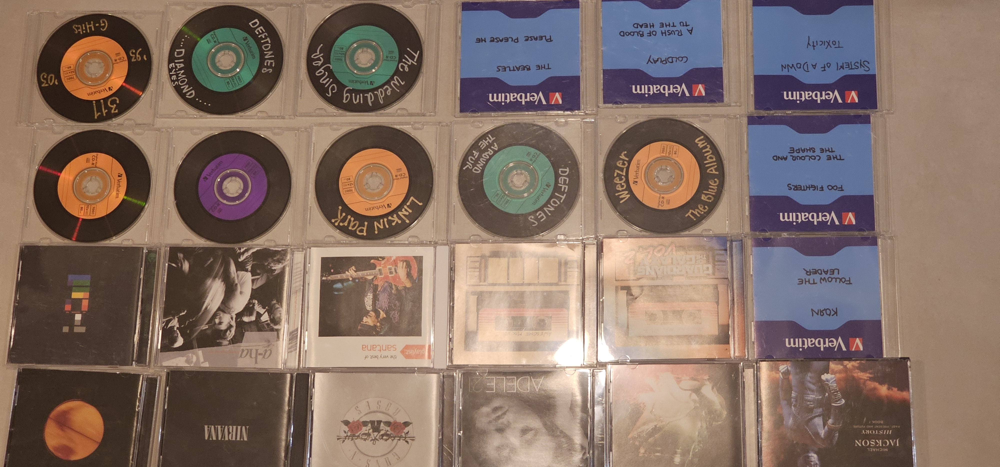

Braulio Rubio
About Me:
My name is Braulio Rubio. I am a 22 year old Computer Science student studying at the University of Texas Rio Grande Valley. (UTRGV) I prefer to be private about what I do, but I also love to talk and meet with new people. I love learning new things and
learning about other people! I enjoy playing video games, playing the piano, going for night drives, going out with friends, and listening to music. I'm also an audiophile!
Hey there! Please visit Leetcode!Make sure to code!
Here is a picture of my record player and CDs:


Braulio's current top 5 songs: (Not in order)
- Lover, You Should've Come Over - Jeff Buckley
- Sunshine - Steve Lacy
- Money - Pink Floyd
- Big Love - Fleetwood Mac
- Eyes Without A Face - Billy Idol
My reasons for listening to high resolution audio:
- Music streaming apps all cost around the same per month, so might as well look for which offeres the most
- I have decent headphones and speakrs, so they're able to handle CD quality and higher
- Spotify charges around $10 for MP3 files while apps like Tidal charge around the same for FLAC files (uncompressed audio)
- I love getting the most out of the stuff I spend money on
Where I get my music:
Some CDs in the picture don't have covers. That's because I either lost them and burnt the ripped version or I bought them from Qobuz. Qobuz is a music streaming service that streams high resolution music. You can also legally buy music from their app or website. I simply make physical copies of my music because CDs have good sound quality and I love physical media.
Link to Qobuz: Qobuz.com
Here are my recommended music streaming services:
| Company |
Released |
Country |
| Qobuz |
2007 |
France |
| Apple Music |
2015 |
United States |
| Tidal |
2015 (1998 originally) |
Norway |
| Amazon Music |
2008 |
United States |